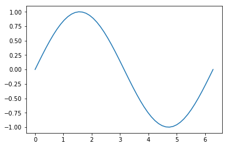
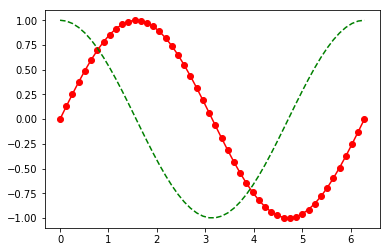
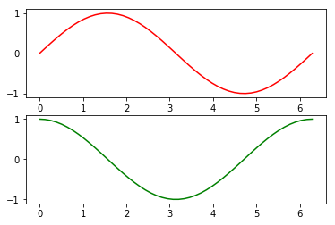
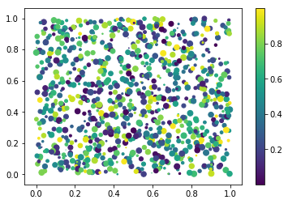
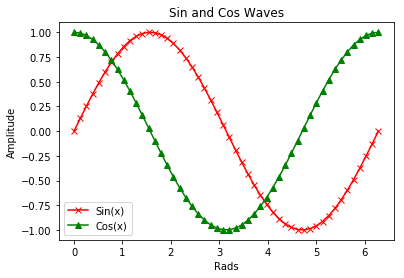
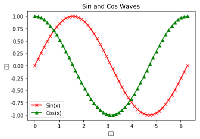
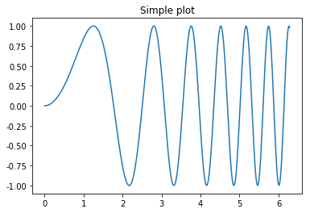

Matplotlib基础¶
Python 在处理数据、分析数据以及数据可视化方面拥有很多功能强大的工具，这也是 Python 在科学领域中能够迅速发展的一个主要原因。
在接下来的一系列文章中，我们将介绍 Python 科学计算中涉及的主要的库，并且学习如何使用它们处理数据以满足我们的需求。但是我们并非只是停留在快速写出模板代码来使用这些库的层面上，我们还会了解这些库背后的数学知识，以帮助我们更好地理解库的运行原理。
首先，我们将从一个功能非常强大的库 Matplotlib 开始介绍，在后面的文章中也会一直用到这个库。
简单来说，Matplotlib是Python的一个绘图库。它包含了大量的工具，你可以使用这些工具创建各种图形，包括简单的散点图，正弦曲线，甚至是三维图形。Python科学计算社区经常使用它完成数据可视化的工作。
画一个简单的图形¶
首先我们要画一条在\([0,2�\pi]\)上的正弦曲线。读者应该会注意到我们在这里使用了Numpy库，但是即便是你没用过这个库也不用担心，在后面的文章中，我们将会介绍到Numpy库。
[1]:
%matplotlib inline
import matplotlib.pyplot as plt
import numpy as np
[2]:
# 简单绘图
x = np.linspace(0,2*np.pi,50)
plt.plot(x,np.sin(x))
plt.show()

在一张图上绘制两个数据集¶
[3]:
x = np.linspace(0,2*np.pi,50)
plt.plot(x,np.sin(x),'r-o',
x,np.cos(x),'g--')
plt.show()

使用子图¶
[4]:
# 使用子图
x = np.linspace(0,2*np.pi,50)
plt.subplot(2,1,1)
plt.plot(x,np.sin(x),'r')
plt.subplot(2,1,2)
plt.plot(x,np.cos(x),'g')
plt.show()

彩色映射散点图¶
[6]:
# 彩色映射散点图
x = np.random.rand(1000)
y = np.random.rand(1000)
size = np.random.rand(1000)*50
colour = np.random.rand(1000)
plt.scatter(x,y,size,colour)
plt.colorbar()
plt.show()

标题、标签、图例¶
[7]:
x = np.linspace(0,2*np.pi,50)
plt.plot(x,np.sin(x),'r-x',label='Sin(x)')
plt.plot(x,np.cos(x),'g-^',label='Cos(x)')
plt.legend()
plt.xlabel('Rads')
plt.ylabel('Amplitude')
plt.title('Sin and Cos Waves')
plt.show()

[8]:
x
[8]:
array([0. , 0.12822827, 0.25645654, 0.38468481, 0.51291309,
0.64114136, 0.76936963, 0.8975979 , 1.02582617, 1.15405444,
1.28228272, 1.41051099, 1.53873926, 1.66696753, 1.7951958 ,
1.92342407, 2.05165235, 2.17988062, 2.30810889, 2.43633716,
2.56456543, 2.6927937 , 2.82102197, 2.94925025, 3.07747852,
3.20570679, 3.33393506, 3.46216333, 3.5903916 , 3.71861988,
3.84684815, 3.97507642, 4.10330469, 4.23153296, 4.35976123,
4.48798951, 4.61621778, 4.74444605, 4.87267432, 5.00090259,
5.12913086, 5.25735913, 5.38558741, 5.51381568, 5.64204395,
5.77027222, 5.89850049, 6.02672876, 6.15495704, 6.28318531])
Title上显示中文的方法 ~[STRIKEOUT:python #coding:utf-8 import matplotlib.pyplot as plt plt.rcParams[‘font.sans-serif’]=[‘SimHei’] #用来正常显示中文标签 plt.rcParams[‘axes.unicode_minus’]=False #用来正常显示负号 #有中文出现的情况，需要u’内容’]~
[9]:
plt.rcParams['font.sans-serif']=['SimHei'] #用来正常显示中文标签
plt.rcParams['axes.unicode_minus']=False #用来正常显示负号
[10]:
x = np.linspace(0,2*np.pi,50)
plt.plot(x,np.sin(x),'r-x',label='Sin(x)')
plt.plot(x,np.cos(x),'g-^',label='Cos(x)')
plt.legend()
plt.xlabel(u'弧度')
plt.ylabel(u'幅度')
plt.title('Sin and Cos Waves')
plt.show()
/Users/mac/anaconda3/lib/python3.7/site-packages/matplotlib/font_manager.py:1331: UserWarning: findfont: Font family ['sans-serif'] not found. Falling back to DejaVu Sans
(prop.get_family(), self.defaultFamily[fontext]))

[11]:
x = np.linspace(0,2*np.pi,400)
y = np.sin(x**2)
f, ax = plt.subplots()
ax.plot(x,y)
ax.set_title('Simple plot')
plt.show()
/Users/mac/anaconda3/lib/python3.7/site-packages/matplotlib/font_manager.py:1331: UserWarning: findfont: Font family ['sans-serif'] not found. Falling back to DejaVu Sans
(prop.get_family(), self.defaultFamily[fontext]))

[ ]: